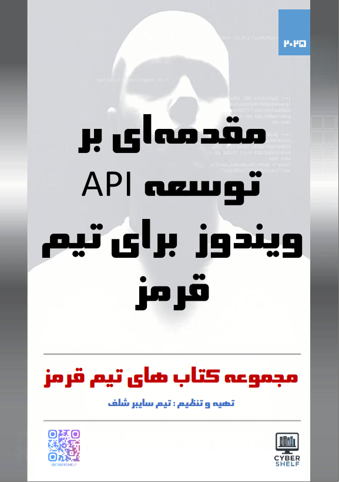

امنیت ویندوز و Red Team
مقدمهای بر Windows API برای تیم قرمز
مشخصات، مخاطبان، محتوای آموزشی و سرفصلها را پیش از انتخاب بررسی کنید.

دانلود نسخه PDF کتاب
دانلودتیم سایبر شلف
تیم سایبر شلف
1404
1
198
وزیری
برنامهنویسان و علاقهمندان به عملیات تیم قرمز از مبتدی تا حرفهای
فارسی
معرفی و مطالعه کتاب
به کتاب «مقدمهای بر توسعه API ویندوز برای تیم قرمز» خوش آمدید.
در دنیای پویا و پیچیده امنیت سایبری، تیمهای قرمز برای شبیهسازی تهدیدات واقعی و ارزیابی مقاومت سیستمها، نیازمند عمیقترین درک ممکن از محیطهای هدف هستند. قلب تپنده سیستم عامل ویندوز، که همچنان یکی از گستردهترین پلتفرمهای هدف است، در Windows API نهفته است. تسلط بر این رابط برنامهنویسی، کلید دستیابی به قدرت، پنهانکاری و کارایی در عملیات تهاجمی است.
این کتاب برای پر کردن شکاف بین تئوری و عمل طراحی شده است. ما از مبانی ساده تعامل با WinAPI در ++C شروع میکنیم و گام به گام به سوی تکنیکهای پیشرفتهای پیش میرویم که هسته اصلی بسیاری از ابزارهای تهاجمی مدرن را تشکیل میدهند. شما به صورت عملی با مفاهیمی مانند دستکاری syscallها، رفع hook از توابع API و اجرای کد مستقیم در حافظه (In-Memory Execution) آشنا خواهید شد. این دانش به شما توانایی توسعه ابزارهای سفارشی و مخفی را میدهد که میتوانند از دید راهکارهای امنیتی مبتنی بر نشانهگذاری (Signature-based) پنهان بمانند.
در طول این مسیر، با سناریوهای کاربردی واقعی از جمله استخراج ایمن اطلاعات از پردازش LSASS و استفاده از مکانیزمهای مستقیم و غیرمستقیم فراخوانی syscall برای دور زدن هوکهای کاربردی (User-land Hooks) روبرو خواهید شد. هدف نهایی این است که شما نه تنها به عنوان یک کاربر، بلکه به عنوان یک خالق، از قابلیتهای بومی ویندوز برای طراحی و اجرای عملیاتهای مؤثر و نامرئی بهره ببرید.
توجه: این کتاب با همکاری یک مدل زبان بزرگ (LLM) تهیه شده است. این همکاری امکان گردآوری، ساختاربندی و ارائه این حجم از اطلاعات تخصصی به شیوهای منسجم و کاربردی را فراهم کرده است. تمامی مطالب با دقت بازبینی و هدف آن ارائه یک راهنمای عملی و قابل اعتماد برای جامعه امنیت سایبری است.
توجه: این کتاب با همکاری یک مدل زبان بزرگ (LLM) تهیه شده است. این همکاری امکان گردآوری، ساختاربندی و ارائه این حجم از اطلاعات تخصصی به شیوهای منسجم و کاربردی را فراهم کرده است. تمامی مطالب با دقت بازبینی و هدف آن ارائه یک راهنمای عملی و قابل اعتماد برای جامعه امنیت سایبری است.
امیدوارم این کتاب منبع ارزشمندی برای شما باشد و درک شما از معماری ویندوز و تواناییهای شما در حوزه امنیت تهاجمی را متحول کند.
با اشتیاق،
تیم سایبر شلف
این کتاب برای چه کسی مناسب است؟
برنامهنویسان و علاقهمندان به عملیات تیم قرمز از مبتدی تا حرفهای
پس از مطالعه چه چیزی یاد میگیرید؟
با مفاهیم، مسیر کار و موضوعات اصلی امنیت ویندوز که در سرفصلهای همین صفحه آمدهاند آشنا میشوید.